Winform Basic User Interface(UI)
This post deals with basic user interface components and their functional implementations with C# programming. All UI objects are in design screen and they have distinct names you can call to play around.
Here's the program overview.
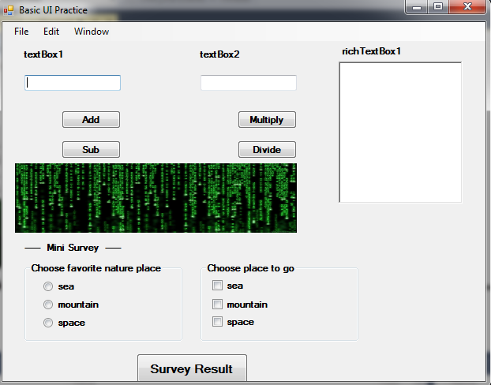
What we will implement are:
1. Textbox 2. Button 3. RichTextBox 4. PictureBox 5. RadioButton&CheckBox
We have two textBoxes and their names are marked on labels. RichTextBox is multi-line textbox for text-editing and advanced formatting. Here we use for result keeping.
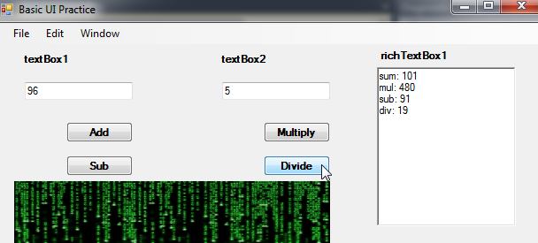
Upon clicking each operation button, results are added to the richTextBox1.
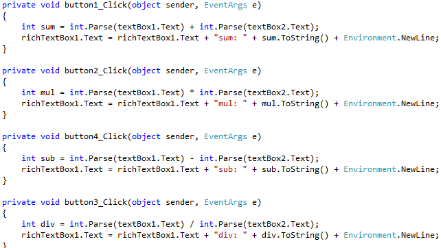
The system inputs the two numbers from textBoxes. They look like numbers, but in fact they are strings.
This is because textbox only deals with type string. We want to convert type from string to integer for mathematic operations.
"int.Parse(Any string)" is the right type conversion. There are also "double.Parse()" and "float.Parse()" if we need to.
And again, we convert the calculated number back to string for display purpose. Use a method "var.ToString()".
What if we want to add menu bar on the program?
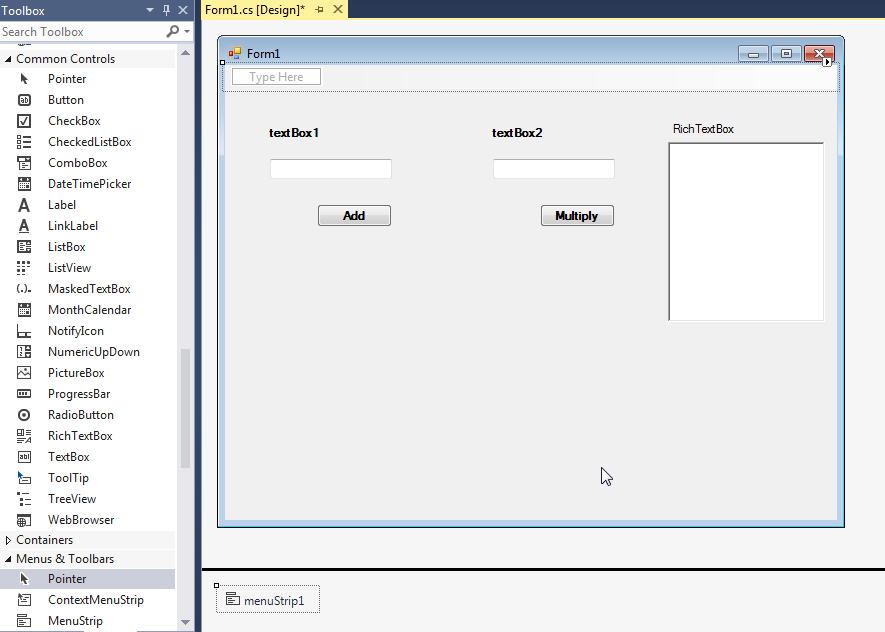
Select MenuStrip from toolBox and it will be added. Type to add any menuItem. Menuitem name "-" is reserved for menu divider line. You can assign keyboard Shortcuts to menus in properties.
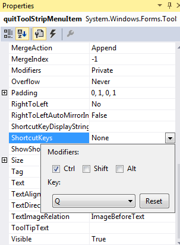
Note the bottom of the screen that "menuStrip1" object is created. This tells the designer that menuStrip was added if not visible. This is useful for fileDialog when the dialog is not visible until executed by the program.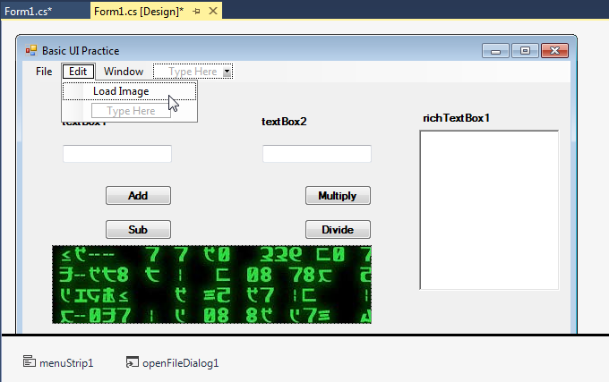
An additional selection screen for openFileDialog will pop up. You can configure its properties such as title, filename and filters with "text|*.extension". Asterisk "*" means all. Therefore *.jpg means filtering out any file name with extension .jpg.
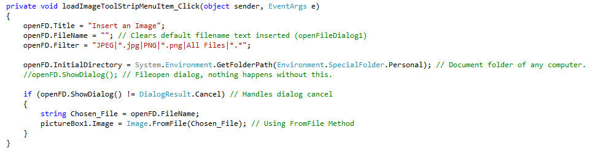
Radio Button and CheckBox are typical interfaces for user selection. They are commonly used in user profile creation when you sign up in a website. You can drag and pull from toolBox to your preferred location. It is always better to group the boxes and buttons using groupBox to modify their property together.
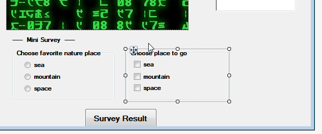
Only one radio button item in a groupBox can be selected. However, checkedBox are there for multiple selections. Use proper input interface for your purpose. Here's a part of button function. ".Checked" handles you checked items. MessageBox is like printf in C++ in their usage resemblance. Whenever you want to debug or explictly show you what's going on, use this.
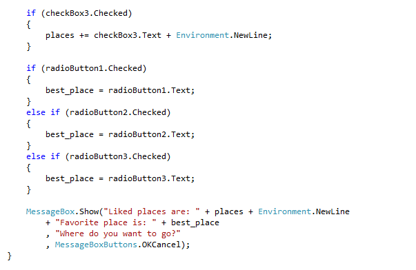
Basic syntax for the box is MessageBox.Show(Content to display, title, options)
For menu item enabled, you may want to display its status.
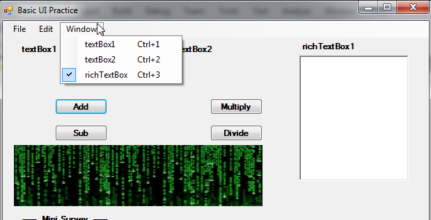
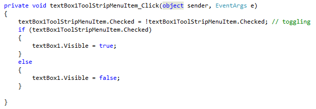
".Chcked" is used here as well. The first line of code works as a switch. When this item menu is clicked(event), checked flag toggles its status.